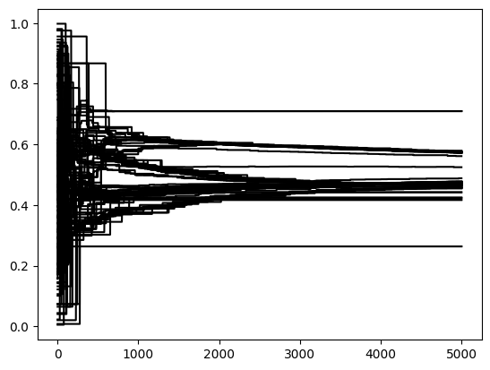
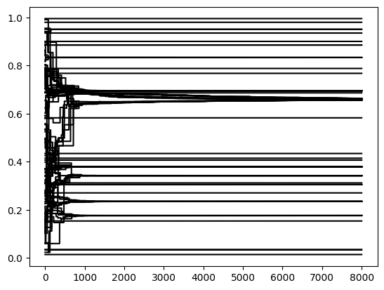
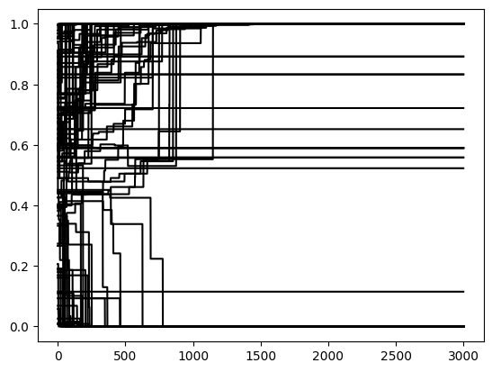

Opinion Dynamics on a network
Replicates the 3 models presented here, but interactions happen on a network.
[1]:
import random
import matplotlib.pyplot as plt
import pop2net as p2n
from pop2net.data_fakers.soep import soep_faker
from pop2net.pop_maker import PopMaker
[2]:
class Agent(p2n.Agent):
def __init__(self, model, *args, **kwargs):
super().__init__(model, *args, **kwargs)
self.opinion: float = random.random()
self.opinion_history: list[float] = []
self.tolerance = self.model.p.tolerance
def get_weight(self, contact: "Agent", mode: int = 1):
"""Calculates a weight which determines how the opinion of the contact will influence the
focal agent."""
# All contacts are weighted the same
if mode == 1:
return 1
# bounded confidence: if the opinion of the contact is too far away from the focal agent's
# opinion, then the focal agent is not influenced by this opinion
elif mode == 2:
abs_opinion_diff = abs(contact.opinion - self.opinion)
if abs_opinion_diff <= self.tolerance:
return 1
else:
return 0
# negative influence
elif mode == 3:
abs_opinion_diff = abs(contact.opinion - self.opinion)
if abs_opinion_diff > 0.5:
return -1 * (2 * abs_opinion_diff - 1)
else:
return 1 - 2 * abs_opinion_diff
def change_opinion(self, mode: int = 1):
"""Simulates the influence of all contacts on the opinion of the focal agent."""
# get all interaction weights as absolute values and calculate the sum
sum_of_abs_weights = sum(
[abs(self.get_weight(contact=agent, mode=mode)) for agent in self.neighbors()],
)
# get all weighted differences in opinions between the focal agent and all his contacts
sum_of_weighted_diffs = sum(
[
(agent.opinion - self.opinion) * self.get_weight(contact=agent, mode=mode)
for agent in self.neighbors()
],
)
if sum_of_abs_weights != 0 and sum_of_weighted_diffs != 0:
# calculate opinion change as a weighted average of opinion differences
opinion_change = sum_of_weighted_diffs / sum_of_abs_weights
# change opinion
self.opinion += opinion_change
# keep the opinion between 0 and 1
if self.opinion < 0:
self.opinion = 0
elif self.opinion > 1:
self.opinion = 1
def record_opinion(self):
"""Stores the current opinion value in a list to analyze it after the simulation."""
self.opinion_history.append(self.opinion)
[3]:
class Home(p2n.Location):
def group(self, agent):
return agent.hid
class Work(p2n.Location):
def setup(self):
self.size = 10
def join(self, agent):
return agent.work_hours_day > 0
class School(p2n.Location):
def setup(self):
self.size = 25
def join(self, agent) -> bool:
return 6 <= agent.age <= 18
class All(p2n.Location):
pass
[4]:
class Model(p2n.Model):
def setup(self):
# micro-level data
df_soep = soep_faker.soep(size=self.p.n_agents)
# PopMaker: creates the population
self.pop_maker = PopMaker(model=self)
self.agents, self.locations = self.pop_maker.make(
df=df_soep,
agent_class=Agent,
location_classes=[
Home,
Work,
School,
],
)
def step(self):
# select one random agent
focal_agent = self.agents.random(n=1)
# execute agent behavior
focal_agent.change_opinion(mode=self.p.opinion_weight_mode)
def update(self):
self.agents.record_opinion()
[5]:
parameters = {
"steps": 5000,
"n_agents": 100,
"opinion_weight_mode": 1,
"tolerance": 0.3,
}
model = Model(parameters=parameters)
results = model.run()
for agent in model.agents:
plt.plot(agent.opinion_history, color="black")
Completed: 5000 steps
Run time: 0:00:01.450020
Simulation finished

[6]:
parameters = {
"steps": 8000,
"n_agents": 100,
"opinion_weight_mode": 2,
"tolerance": 0.2,
}
model = Model(parameters=parameters)
results = model.run()
for agent in model.agents:
plt.plot(agent.opinion_history, color="black")
Completed: 8000 steps
Run time: 0:00:02.944818
Simulation finished

[7]:
parameters = {
"steps": 3000,
"n_agents": 100,
"opinion_weight_mode": 3,
"tolerance": 0.3,
}
model = Model(parameters=parameters)
results = model.run()
for agent in model.agents:
plt.plot(agent.opinion_history, color="black")
Completed: 3000 steps
Run time: 0:00:01.111195
Simulation finished

[8]:
model.pop_maker.eval_affiliations()
______________________________________
Number of agents per location
______________________________________
n_agents
count mean std min 25% 50% 75% max
location_class
Home 35.0 2.857143 1.417181 1.0 2.0 2.0 4.00 6.0
School 1.0 6.000000 NaN 6.0 6.0 6.0 6.00 6.0
Work 4.0 11.250000 0.500000 11.0 11.0 11.0 11.25 12.0
______________________________________
Number of affiliated locations per agent
______________________________________
count 100.000000
mean 1.510000
std 0.502418
min 1.000000
25% 1.000000
50% 2.000000
75% 2.000000
max 2.000000
Name: n_affiliated_locations, dtype: float64